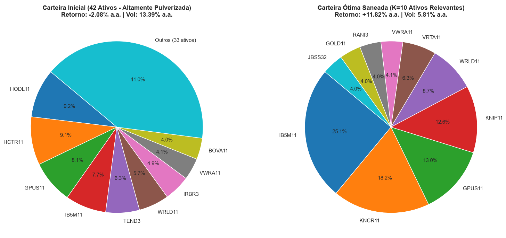
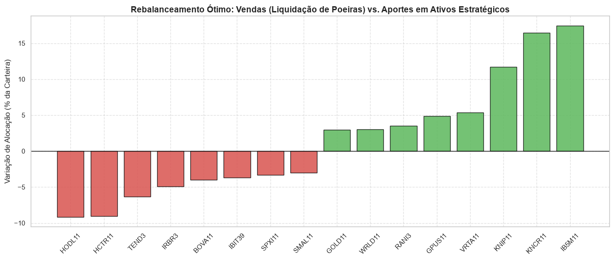
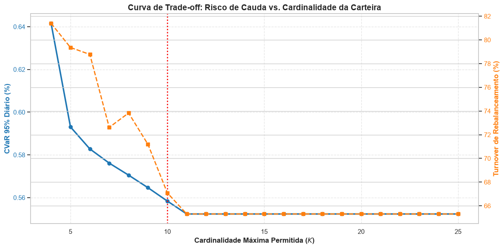

Saneamento de carteira real na B3 (42 ativos) via Programação Linear Inteira Mista (MILP / CVaR 95%) com custos de transação.
A Programação Quadrática (QP) clássica minimiza $\mathbf{w}^T \Sigma \mathbf{w}$, mas falha em cenários reais de rebalanceamento.
Penaliza tanto retornos positivos quanto negativos, ignorando a assimetria e as caudas pesadas do mercado.
Sem restrições inteiras, o modelo gera dezenas de posições minúsculas ($<1\%$), inviáveis operacionalmente.
Substituir a variância pelo CVaR 95% linearizado e impor cardinalidade ($K$) + custos de giro via MILP.
Pela formulação de Rockafellar & Uryasev (2000), o CVaR é expresso de forma 100% linear sobre os cenários históricos.
Evita matrizes de covariância quadráticas ($N \times N$), tornando o problema tratável mesmo com variáveis binárias $z_i$.
Com $\alpha = 0{,}95$, $u_s$ captura apenas as perdas que excedem o $\text{VaR}_{95\%}$ ($\eta$), protegendo a cauda esquerda.
$$\sum_{i \in \mathcal{I}} w_i = 1, \qquad \sum_{i \in \mathcal{I}} \mu_i w_i \ge R_{\text{alvo}}$$
Garante alocação total do capital ($100\%$) e exige retorno esperado mínimo para a carteira saneada.
$$\sum_{i \in \mathcal{I}} z_i \le K, \qquad w_{\min} z_i \le w_i \le w_{\max} z_i$$
Limita a carteira a no máximo $K$ ativos e elimina "poeiras" impondo $w_{\min}=4\%$ quando $z_i=1$.
$$w_i - w_i^0 = \Delta w_i^+ - \Delta w_i^-, \quad \Delta w_i^+, \Delta w_i^- \ge 0$$
Lineariza $|w_i - w_i^0|$ separando compras ($\Delta w_i^+$) e vendas ($\Delta w_i^-$) a partir da posição inicial.
$$u_s \ge -\sum_{i \in \mathcal{I}} r_{i,s} w_i - \eta, \quad u_s \ge 0 \;\;\forall s \in \mathcal{S}$$
Define $u_s = \max(0, \text{Perda}_s - \eta)$ para cada um dos $S=246$ cenários históricos.
Instância sintética ($S=50$ cenários, $K=2$, $w_{\min}=15\%$, $w_{\max}=85\%$, $R_{\text{alvo}}=11\%$) para verificar o Branch & Bound.
| Ativo Sintético | Retorno ($\mu$) / Vol ($\sigma$) | Inicial ($w^0$) | Ótimo ($w^*$) | Variação ($\Delta w$) | Binária ($z^*$) |
|---|---|---|---|---|---|
| Ativo_A (Ações) | $\mu=18\%$ / $\sigma=40\%$ | 10,00% | 37,96% | +27,96% | 1 (Mantido) |
| Ativo_B (FIIs) | $\mu=12\%$ / $\sigma=30\%$ | 5,00% | 0,00% | -5,00% | 0 (Eliminado) |
| Ativo_C (Renda Fixa) | $\mu=8\%$ / $\sigma=20\%$ | 85,00% | 62,04% | -22,96% | 1 (Mantido) |
Carteira inicial com 16 de 42 ativos abaixo de 1%. O solver HiGHS encontrou o ótimo global em 0,2671 segundos.
Antes: -2,08% a.a.
Antes: 13,39% a.a. (-56%)
Risco de cauda controlado
Giro de capital: 67,09%

| Ativo | Inicial | Ótimo ($w^*$) | $\Delta w$ |
|---|---|---|---|
| IB5M11 | 7,67% | 25,11% | +17,44% |
| KNCR11 | 1,76% | 18,18% | +16,42% |
| GPUS11 | 8,11% | 13,00% | +4,89% |
| KNIP11 | 0,92% | 12,61% | +11,68% |
| WRLD11 | 5,68% | 8,70% | +3,02% |
| Ativo | Inicial | Ótimo ($w^*$) | $\Delta w$ |
|---|---|---|---|
| VRTA11 | 0,97% | 6,30% | +5,34% |
| VWRA11 | 4,10% | 4,10% | 0,00% |
| GOLD11 | 1,07% | 4,00% | +2,93% |
| RANI3 | 0,47% | 4,00% | +3,53% |
| JBSS32 | 2,18% | 4,00% | +1,82% |


Retorno saltou de -2,08% para +11,82% a.a. com redução de 56% na volatilidade (13,39% → 5,81%).
Linearização do CVaR permitiu resolver 42 ativos + restrições inteiras para otimalidade global em 0,27s.
Eliminou 31 ativos residuais/arriscados, mantendo diversificação real com apenas 10 posições.